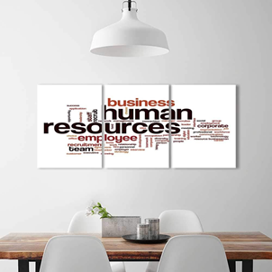

AKADEMİK VE PROFESYONEL BAŞVURULARDA REFERANS MEKTUBUNUN ÖNEMİ
Akademik yaşamda ve iş yaşamında çeşitli sebeplerle referans mektubuna ihtiyaç duyulur. Referans mektubu, akademik bir başvurunun ya da profesyonel bir işin kabul veya reddine tek başına etki eden bir döküman değildir. Ancak, ihtiyaç durumunda eksikliği ciddi soruna yol açar ve bir başvurunun değerleme dışı kalmasına sebebiyet verebilir. Kabul oranı çok düşük olan bir okula veya programa başvuruda ise, tüm başvuru kriterlerinde sundukları dökümanlardan elde ettikleri puanları başabaş olan adaylar için, referans mektubunun önemi göreceli olarak daha fazladır veya kıyasıya mücadele edilen bir burs kararında referans mektubu çok ciddi bir rol oynayabilir.
 Kısaca liseden başlayarak post doktoraya kadar eğitimin tüm aşamalarında, staj başvurularında veya iş yaşamında referans mektubuna ihtiyaç doğabilir. RefinDepot; dijital ortamda referans talep etmenizi ve bunları depolayarak çoklu kullanabilmenize olanak tanır. Referanslarınızı her an kullanabilir ve karşınıza çıkabilecek akademik ve profesyonel fırsatları gecikmeden değerlendirebilirsiniz. RefinDepot portalında, kapsamlı referans mektubu üretme modülü dışında, özgeçmiş (CV/Resume) ile ilgili detaylı bilgilendirmeler ve örnekler, kapak sayfası (cover page) hazırlama önerileri, mülakatlar, çeşitli dünya ülkelerindeki eğitim olanakları, burslar konusunda bilgilendirmeler yer almaktadır.


 RefinDepot Yorumları >>
RefinDepot Yorumları >>